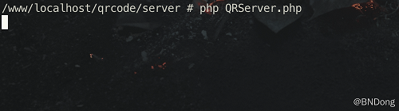
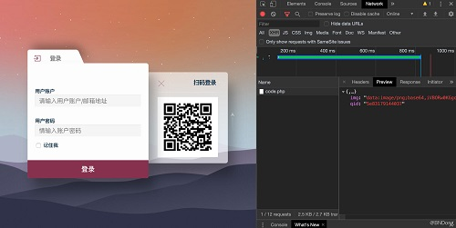
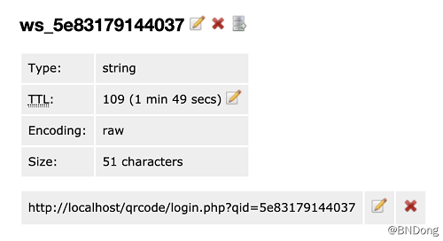
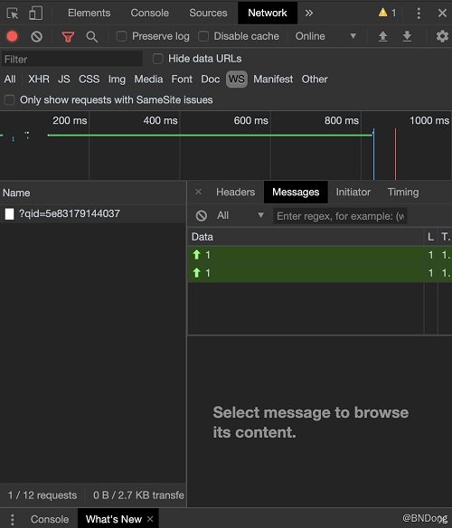
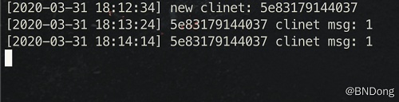

由于扫码登录比账号密码登录更方便、快捷、灵活，在实际使用中更受到用户的欢迎。
本文主要介绍了扫码登录的原理及整体流程，包含了二维码的生成/获取、过期失效的处理、登录状态的监听。
扫码登录的原理
整体流程
为方便理解，我简单画了一个 UML 时序图，用以描述扫码登录的大致流程！

总结下核心流程：
1) 请求业务服务器获取用以登录的二维码和UUID。
2) 通过 websocket 连接 socket 服务器，并定时(时间间隔依据服务器配置时间调整)发送心跳保持连接。
3) 用户通过 APP 扫描二维码，发送请求到业务服务器处理登录。根据 UUID 设置登录结果。
4) socket 服务器通过监听获取登录结果，建立 session 数据，根据 UUID 推送登录数据到用户浏览器。
5) 用户登录成功，服务器主动将该 socker 连接从连接池中剔除，该二维码失效。
关于客户端标识
也就是 UUID，这是贯穿整个流程的纽带，一个闭环登录过程，每一步业务处理都是围绕该次的 UUD 进行处理的。UUID 的生成有根据 session_id 的也有根据客户端 ip 地址的。个人还是建议每个二维码都有单独的 UUID，适用场景更广一些！
关于前端和服务器通讯
前端肯定是要和服务器保持一直通讯的，用以获取登录结果和二维码状态。看了下网上的一些实现方案，基本各个方案都有用的：轮询、长轮询、长链接、websocket。也不能肯定的说哪个方案好哪个方案不好，只能说哪个方案更适用于当前应用场景。个人比较建议使用长轮询、websocket 这种比较节省服务器性能的方案。
关于安全性识
扫码登录的好处显而易见，一是人性化，再就是防止密码泄漏。但是新方式的接入，往往也伴随着新的风险。所以，很有必要再整体过程中加入适当的安全机制。例如：
强制 HTTPS 协议
短期令牌
数据签名
数据加密
扫码登录的过程演示
代码实现和源码后面会给出。
开启 Socket 服务器
访问登录页面
可以看到用户请求的二维码资源，并获取到了 qid 。
获取二维码时候会建立相应缓存，并设置过期时间：
之后会连接 socket 服务器，定时发送心跳。
此时 socket 服务器会有相应连接日志输出：
完整 Demo 源码：BNDong/demo/scanCodeLogin